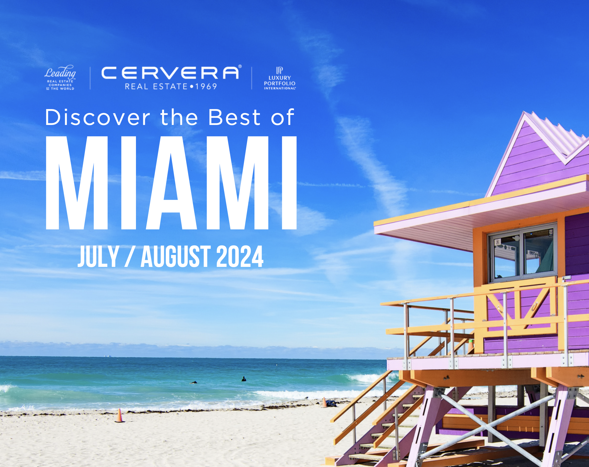
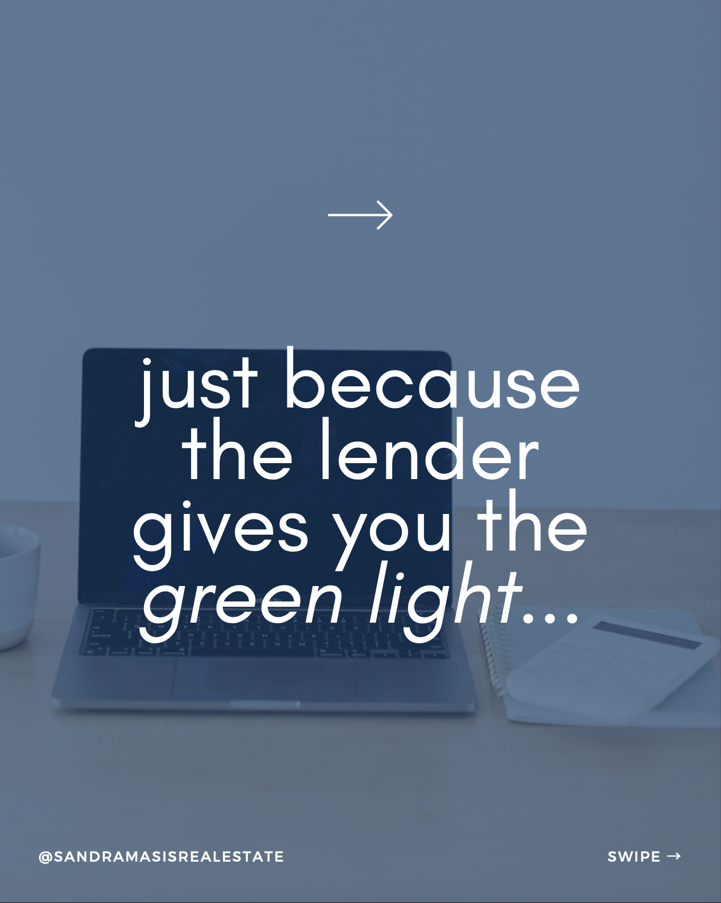
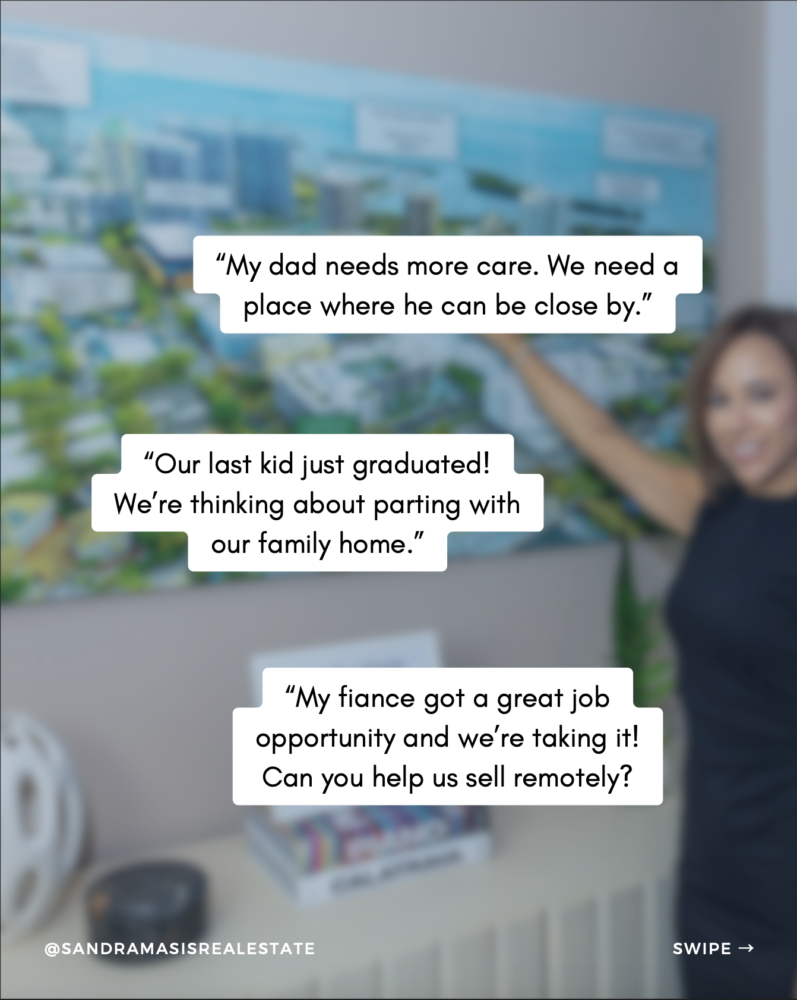
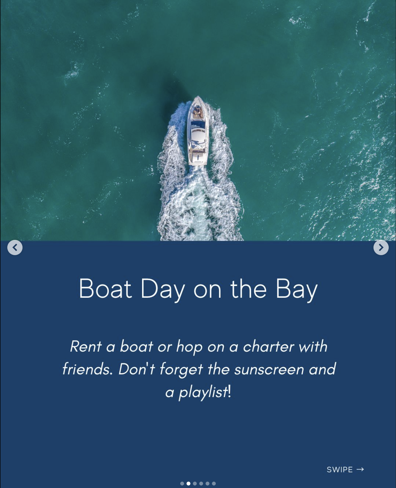

↟ 01 / 06
Cervera Real Estate
BRAND / DIGITAL / MARKETING / EDITORIAL
During my graphic design internship at Cervera Real Estate in Miami, I created marketing materials across digital and print, including property landing pages, social media campaigns, event communications, and editorial content. I worked across different formats while keeping the work visually cohesive and easy to navigate.
Digital Experiences
01I designed landing-page experiences for real estate projects with an emphasis on clear layouts, strong visuals, and clear calls to action. Property imagery and visual pacing bring each place to life.


Market Intelligence
02A consistent visual system brings together neighborhood comparisons, market tables, and charts in a Miami-Dade County market report.
Campaigns & Social
03Social media systems were adapted to different agents, audiences, and campaign goals. Event-focused editorial pieces brought together destination imagery, local recommendations, and Cervera’s visual identity.



